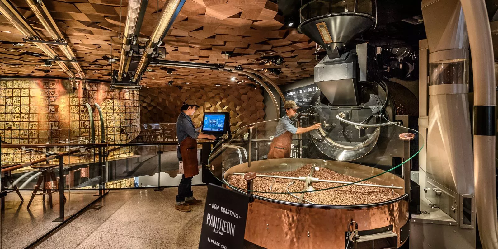
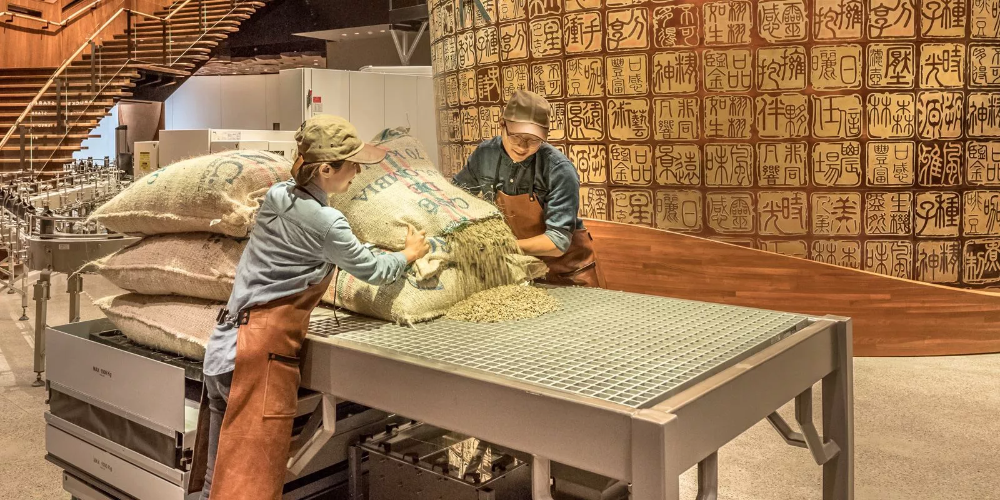
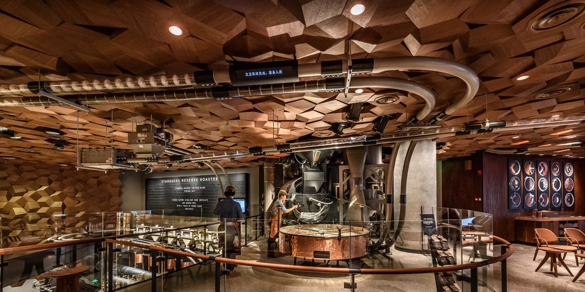
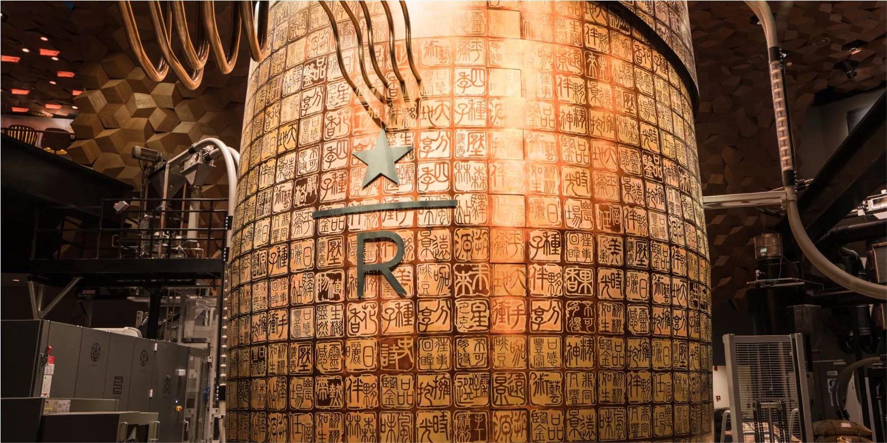
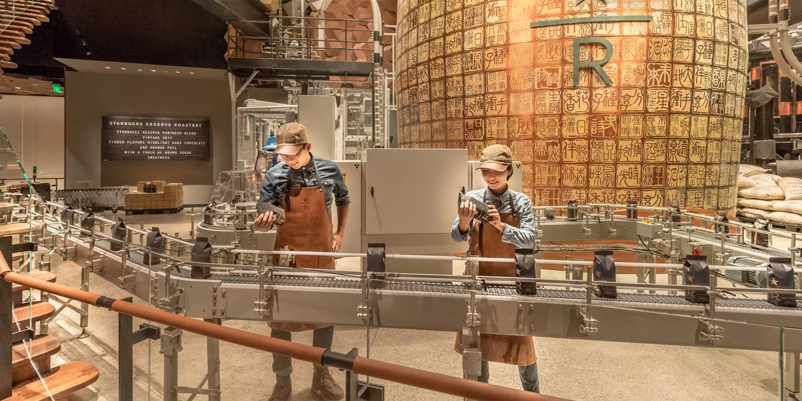
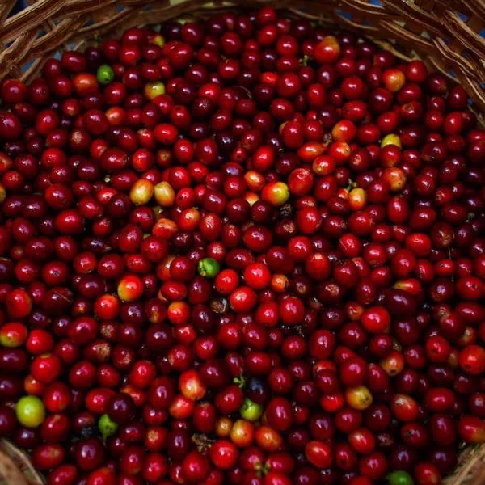
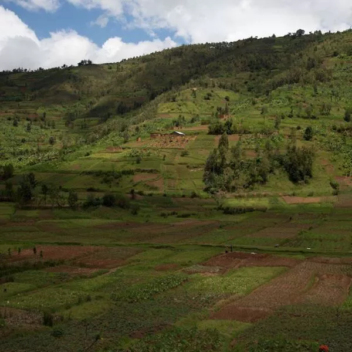
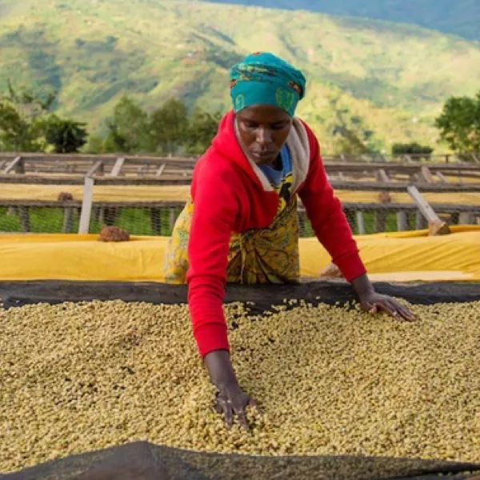
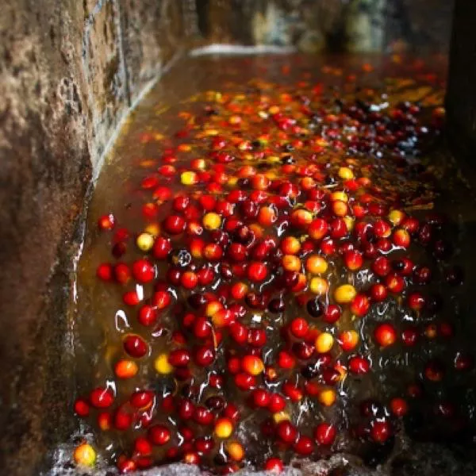

Toggle navigation
首页
菜单
美食
烘焙
专星送
产品工坊
(current)
茶文化
咖文化
奶茶文化
相册
登录
注册
烘焙工坊是我们必须
去创造的作品
塞壬在召唤，我们在聆听
长久以来，我们一直渴望创造一个超乎想象的地方。在这里，我们将挥洒激情、追逐理想，去呈现每一段咖啡之旅所蕴含的魔力。在这里，我们讲述过去、现在、以及未来。我们挑选了全球极少数的城市，去创造这空前的咖啡礼赞。我们倾注一切的激情成就了这座咖啡圣地。从咖啡、烘豆机，到材质、手工细节，这里的一切都令我们深深着迷。
生豆站





咖啡图书馆
 
咖啡生长在哪里？
我们不懈地追寻非凡的小批量臻选咖啡豆。它们仅生长在被称为“咖啡带”的区域之内，那里土壤肥沃，气候适宜，枝繁叶茂。中国的咖啡主要产自于海南、云南、广东、台湾等地区,因为这些地区位于北纬15度至北回归线之间,气温比较高,适合咖啡生长。
 
咖啡是如何加工的?
咖啡的加工过程是技艺与科学的结合，它指的是从咖啡浆果中提取咖啡豆的过程。 咖啡浆果的加工方法，根据其原产地和风味特性而各有不同。三种比较常见的加工方法为：水洗法加工，半水洗法加工和自然加工。通过什么加工方法来去除果肉与果皮，将会对你最后所品尝的咖啡造成长久的影响。